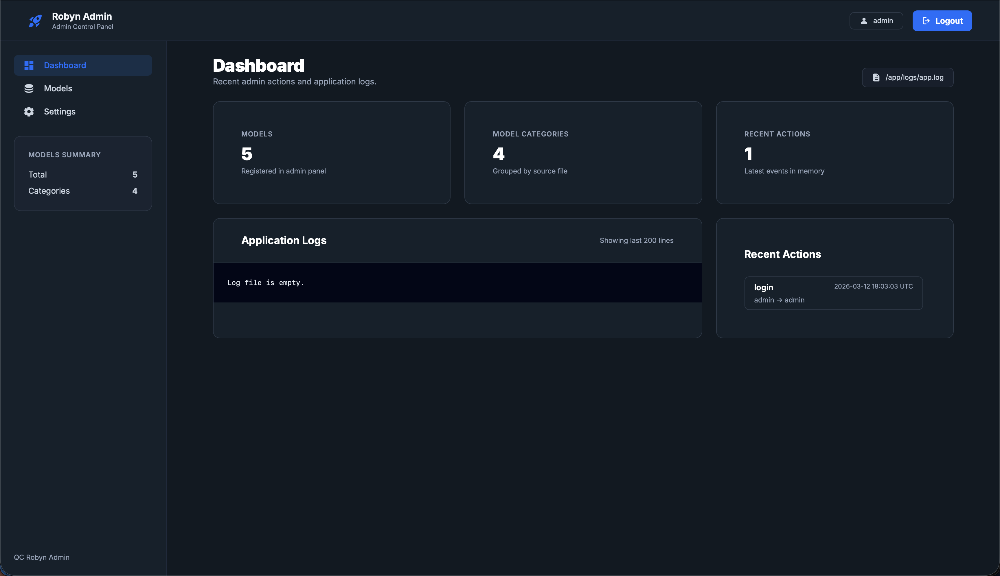

Професійна автоматизація Rust-powered Python бекенду
Robyn — це асинхронний Python веб-фреймворк із ядром на Rust, створений для швидкого API-розроблення з мінімальним boilerplate.
from robyn import Robyn
app = Robyn(__file__)
@app.get("/")
def health():
return {"framework": "Robyn", "status": "ok"}
app.start(port=8080)Robyn надає вбудовану інтеграцію з LLM та агентами для прикладних AI-сценаріїв у backend API.
from robyn import Robyn, Request
from robyn.ai import agent, configure
configure(
provider="openai",
api_key="your-api-key-here",
model="gpt-4o-mini"
)
@agent(runner="simple", instructions="You are a helpful coding assistant.")
def coding_assistant():
pass
app = Robyn(__file__)
@app.post("/chat")
async def chat(request: Request):
body = request.json()
user_message = body.get("message", "")
response = await coding_assistant.run(user_message)
return {"response": response}Source: https://robyn.tech/documentation/en/api_reference/ai
# Agents quick start
python examples/agents.py
python examples/agent_skills.pySource: https://robyn.tech/documentation/en/api_reference/agents
from robyn import Robyn
from robyn.mcp import MCPContext
app = Robyn(__file__)
@app.mcp("greet_user")
def greet_user(name: str, ctx: MCPContext):
return f"Hello {name}! Your request ID is {ctx.request_id}"
if __name__ == "__main__":
app.start(port=8080)Source: https://robyn.tech/documentation/en/api_reference/mcps
Robyn дозволяє вашому додатку виступати як хост для MCP серверів, надаючи агентам доступ до інструментів у стандартний спосіб.
from robyn import Robyn
import rustimport.import_hook
import rust_code
app = Robyn(__file__)
@app.get("/sync", const=True)
def sync_get():
return "Hello, world!"
@app.get("/")
def h(request):
rust_code.hello()
return "Hello World"# Усі доступні flags запуску Robyn
python app.py -h --help
python app.py --processes 4 --workers 2
python app.py --dev
python app.py --log-level INFO
python app.py --create
python app.py --docs
python app.py --open-browser
python app.py --version
python app.py --compile-rust-path ./src/rust
python app.py --create-rust-file rust_code
python app.py --disable-openapi
python app.py --fastSource: https://robyn.tech/documentation/en/api_reference/const_requests
Source: https://robyn.tech/documentation/en/api_reference/using_rust_directly
from robyn import Robyn, Request, Headers
from robyn.types import HttpMethod
from robyn.robyn import jsonify
app = Robyn(__file__)
@app.get("/sync")
def sync_get(request: Request):
def my_gen():
for i in range(10):
yield f"message {i}\n"
return my_gen(), Headers({"Content-Type": "text/event-stream"})
@app.get("/client-ip")
def get_client_ip(request: Request):
return {"ip": request.ip_addr}
@app.route(endpoint="/graphql", methods=[HttpMethod.POST, HttpMethod.GET])
async def graphql_router(request: Request):
body = request.json()
query = body.get("query")
return jsonify({"query": query})Source: https://robyn.tech/documentation/en/api_reference/server_sent_events
Source: https://robyn.tech/documentation/en/api_reference/advanced_features
Source: https://robyn.tech/documentation/en/api_reference/graphql-support
request.ip_addr без маніпуляцій із заголовками.
from robyn import Robyn, Request, jsonify
app = Robyn(__file__)
users = {1: {"id": 1, "name": "Anna"}}
@app.get("/user/:id")
def get_u(r: Request):
uid = int(r.path_params["id"])
user = users.get(uid)
return jsonify(user or {"error": "not found"})
@app.post("/user")
def add_u(r: Request):
data = r.json()
uid = max(users.keys()) + 1
users[uid] = {"id": uid, "name": data["name"]}
return jsonify(users[uid])
@app.delete("/user/:id")
def del_u(r: Request):
users.pop(int(r.path_params["id"]), None)
return jsonify({"ok": True})
app.start(port=8080)from fastapi import FastAPI, HTTPException
from pydantic import BaseModel
import uvicorn
app = FastAPI()
users = {1: {"id": 1, "name": "Anna"}}
class UserIn(BaseModel):
name: str
@app.get("/user/{id}")
def get_u(id: int):
if id not in users:
raise HTTPException(status_code=404, detail="not found")
return users[id]
@app.post("/user")
def add_u(user: UserIn):
uid = max(users.keys()) + 1
users[uid] = {"id": uid, "name": user.name}
return users[uid]
@app.delete("/user/{id}")
def del_u(id: int):
users.pop(id, None)
return {"ok": True}
uvicorn.run(app, host="0.0.0.0", port=8000)from django.urls import path, include
from rest_framework import serializers, viewsets, routers
from .models import User
class UserSer(serializers.ModelSerializer):
class Meta:
model = User
fields = ["id", "name", "email"]
class UserViewSet(viewsets.ModelViewSet):
queryset = User.objects.all()
serializer_class = UserSer
router = routers.DefaultRouter()
router.register("user", UserViewSet, basename="user")
urlpatterns = [path("api/", include(router.urls))]
# run: python manage.py runserver 0.0.0.0:8000Sources: JSON Serializer | Plaintext
robyn-config — CLI-надбудова для Robyn, яка автоматизує створення, розширення та підтримку production-ready бекенд-проєктів.
# 1) Створення нового проєкту
robyn-config create
# 2) Додавання сутності
robyn-config add
# 3) Генерація адмінпанелі
robyn-config adminpanel
# 4) Запуск застосунку
uv run python -m cliФундаментальна команда для ініціалізації проєкту. Створює складну архітектуру (DDD/MVC) з усіма налаштуваннями.
├── 📁 compose
│ └── 📁 app
│ ├── 🐳 Dockerfile
│ ├── 📄 dev.sh
│ └── 🐍 prod.py
├── 📁 src
│ └── 📁 app
│ ├── 📁 config
│ │ ├── 📁 integrations
│ │ ├── 🐍 authentication.py
│ │ ├── 🐍 database.py
│ │ └── 🐍 public_api.py
│ ├── 📁 domain
│ │ ├── 📁 users
│ │ │ ├── 🐍 entities.py
│ │ │ ├── 🐍 repository.py
│ │ │ └── 🐍 services.py
│ ├── 📁 infrastructure
│ │ ├── 📁 database
│ │ │ ├── 📁 migrations
│ │ │ ├── 📁 repository
│ │ │ └── 📁 tables
│ ├── 📁 presentation
│ │ ├── 📁 users
│ │ │ ├── 🐍 contracts.py
│ │ │ └── 🐍 rest.py
├── ⚙️ docker-compose.yml
├── ⚙️ pyproject.toml
└── 📄 uv.lock$ robyn-config add
? Enter entity name: product
? Choose component: all
CREATE models/product.py
CREATE repos/product_repo.py
CREATE routes/product_routes.py
UPDATE routes/__init__.pyДинамічне розширення проєкту новими сутностями за секунди.
Генерація професійного інтерфейсу для управління даними.

Вбудовані конфіги для Ruff, MyPy та Pytest.
Оптимізовані Multi-stage Dockerfiles та compose.
Підтримка AI Agent Skills для автоматизації процесів.
Все це разом створює найкращий Developer Experience (DevEx) у світі Python бекенду.
Корисні посилання:
robyn.tech | github.com/Lehsqa/robyn-config